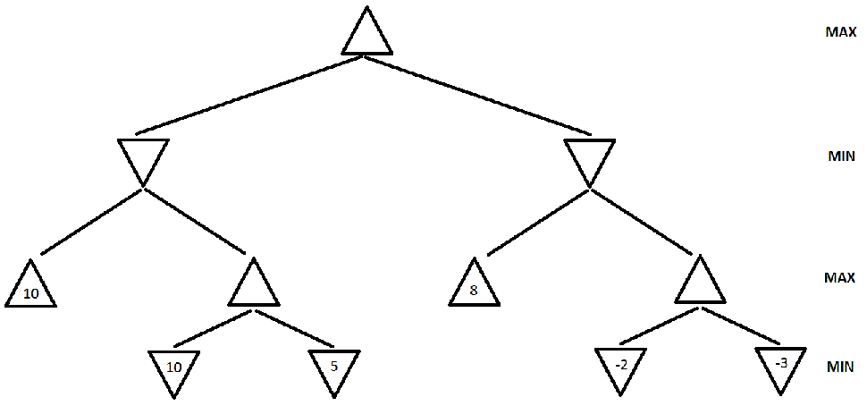
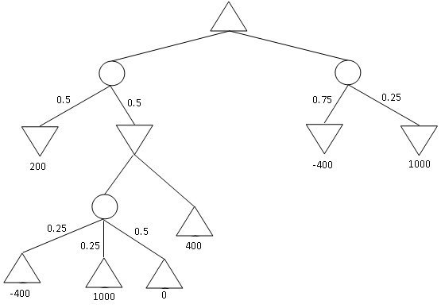

Assignment 3
Written Assignment - Game Playing & Logic
Max possible score:
- 4308: 150 Points
- 5360: 150 Points
Task 1
Max: [4308: 15 Points,
5360: 15 Points]
Figure 1. A tic-tac-toe board state.
Consider the tic-tac-toe board state shown in Figure 1. Draw
the full
minimax search tree starting from this state, and ending in terminal
nodes. Show the utility value for each terminal and non-terminal node.
Also show which move the Minimax algorithm decides to play for X.
Utility values are +1 if X wins, 0 for a tie, and -1 if O wins. (Note:
X is the MAX player).
Task 2
Max: [4308: 15 Points,
5360: 15 Points]
Note: This is a
ABET Assesment Task

Figure 2. A game search tree.
a. (4308: 10 points, 5360: 10 points)
In the game search tree of Figure 2, indicate what nodes will be pruned
using alpha-beta search, and what the estimated utility values are for
the rest of the nodes. Assume that, when given a choice, alpha-beta
search expands nodes in a left-to-right order. Also, assume the MAX
player plays first. Finally incidcate which action the Minmax algorithm
will pick to exectute.
b. (4308: 5 points, 5360: 5 points) This question is also on
the game search tree
of Figure 2. Suppose we are given some additional knowledge about the
game: the maximum utility value is 10, i.e., it is not mathematically
possible for the MAX player to get an outcome greater than 10. How can
this knowledge be used to further improve the efficiency of alpha-beta
search? Indicate the nodes that will be pruned using this improvement.
Again, assume that, when given a choice, alpha-beta search expands
nodes in a left-to-right order, and that the MAX player plays first.
Task 3
Max: [4308: 10 Points,
5360: 10 Points]
Suppose that you want to implement an algorithm that will compete on a
two-player deterministic game of perfect information. Your opponent is
a supercomputer called DeepGreen. DeepGreen does not use Minimax. You
are given a library function DeepGreenMove(S), that takes any state S
as an argument, and returns the move that DeepGreen will choose for
that state S (more precisely, DeepGreenMove (S) returns the state
resulting from the opponent's move).
Write
an algorithm in pseudocode (following the style of the Minimax
pseudocode) that will always make an optimal decision given the
knowledge we have about DeepGreen. You are free to use the library
function DeepGreenMove(S) in your pseudocode. What advantage would this
algorithm have over Minimax? (if none, Justify).
Task 4
Max: [4308: 10 Points,
5360: 10 Points]

Figure 3: An Expectiminmax tree.
Find
the value of every non-terminal node in the expectiminmax tree given
above. Also indicate which action will be performed by the algoirithm.
What is lowest and highest possible outcome of a single game if the
minmax strategy is followed.
Task 5
Max: [4308: 10 Points,
5360: 10 Points]

Figure 4: Yet another game search tree
Consider
the MINIMAX tree above. Suppose that we are the MAX player, and we
follow the MINIMAX algorithm to play a full game against an opponent.
However, we
do not know what algorithm the opponent uses.
Under
these conditions, what is the best possible outcome of playing the full
game for the MAX player? What is the worst possible outcome for the MAX
player? Justify your answer.
NOTE:
the question is not asking you about what MINIMAX will compute for the
start node. It is asking you what is the best and worst outcome of a complete
game under
the assumptions stated above.
Task 6
Max: [4308: 10 Points,
5360: 10 Points]
Two logical statements S1 and S2 are logically equivalent if (S1
<=> S2) is valid. We have two knowledge bases, KB1 and KB2..
Write a function
CHECK_EQUIVALENCE(KB1, KB2) that:
- returns true if KB1 and KB2 are logically equivalent.
- returns false otherwise.
Your pseudocode can re-use any code from the textbook or
slides, and can call any of the functions given in the textbook or
slides, as long as such code and functions are used correctly, with
correct names for the functions, and with well-specified values for all
variables and arguments.
Task 7
Max: [4308: 10 Points,
5360: 10 Points]
| A |
B |
C |
KB |
S1 |
| True |
True |
True |
True |
True |
| True |
True |
False |
False |
True |
| True |
False |
True |
True |
True |
| True |
False |
False |
False |
True |
| False |
True |
True |
False |
False |
| False |
True |
False |
False |
False |
| False |
False |
True |
True |
True |
| False |
False |
False |
False |
False |
KB and S1 are two propositional logic statements, that are constructed
using symbols A, B, C, and using various connectives. The above truth
table shows, for each combination of values of A, B, C, whether KB and
S1 are true or false.
Part a: Given the above
information, does KB entail S1? Justify your answer.
Part b: Given the above
information, does statement NOT(KB) entail statement NOT(S1)? Justify
your answer.
Task 8
Max: [4308: 10 Points,
5360: 10 Points]
Suppose that some knowledge base contains various
propositional-logic sentences that utilize symbols A, B, C, D
(connected with various connectives). There are only two cases when the
knowledge base is false:
- First case: when A is true, B is false, C is true, D is true.
- Second case: when A is false, B is false, C is true, D is false.
In all other cases, the knowledge base is true. Write a conjunctive
normal form (CNF) for the knowledge base.
Task 9
Max: [4308: 20 Points,
5360: 20 Points]
Note: This is a
ABET Assesment Task
Consider the KB
A => B
B <=> C
D => A
E => D
C AND E => F
E
Show that this entails F by
i. Forward Chaining
ii. Backward Chaining
iii. Resolution
Task 10
Max: [4308: 40 Points,
5360: 40 Points]
In April, John and Mary sign the following contract:
- If it rains in May, then John must give Mary a check for
$10,000
- If John gives Mary a check for $10,000, Mary must mow
the lawn.
What truly happened those days is the following:
- It did not rain in May.
- John gave Mary a check for $10,000
- Mary mowed the lawn.
Part a: Write a first order logic
statement to express the contract. Make sure that you clearly define
what constants and predicates that you use are. (NOTE: DO NOT use
functions)
Part b: Write a logical statement to
express what truly happened. When possible, use the same predicates and
constants as in
question 6a. If you need to define any new predicates or constants,
clearly define what
they stand for.
Part c: Define the symbols required to convert any
KB involved in the above
domanin from FOL to Propositional logic (Your symbols must allow me to
convert ANY KB that uses the predicates and constants as decribed
previously).
Part d: Use the sybols given in part c, to convert the
answers to part a and b to Propositional Logic.
Part e:
Was the contract violated
or not, Justify your answer (Note: if the sequence of events that
occured entails the contract then it was not violated)